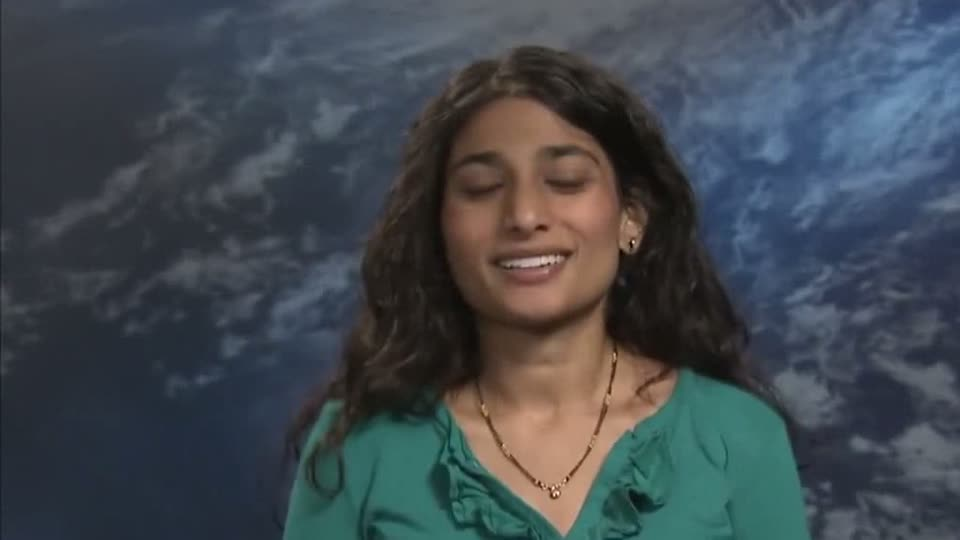
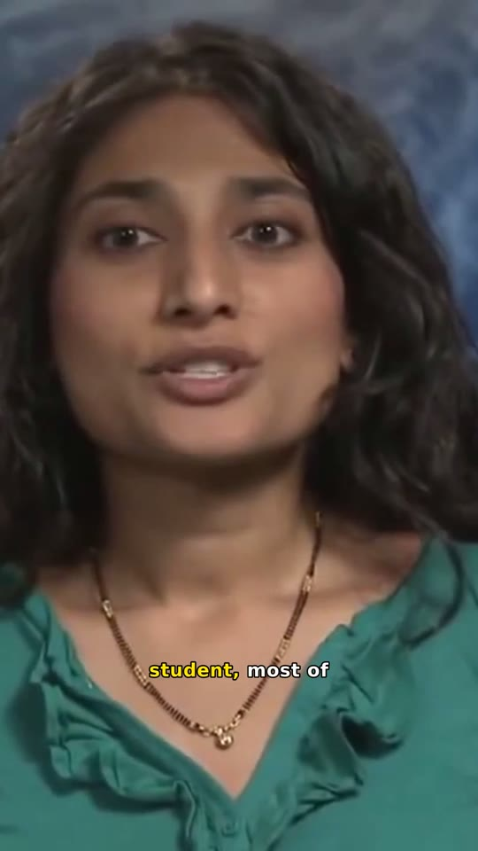
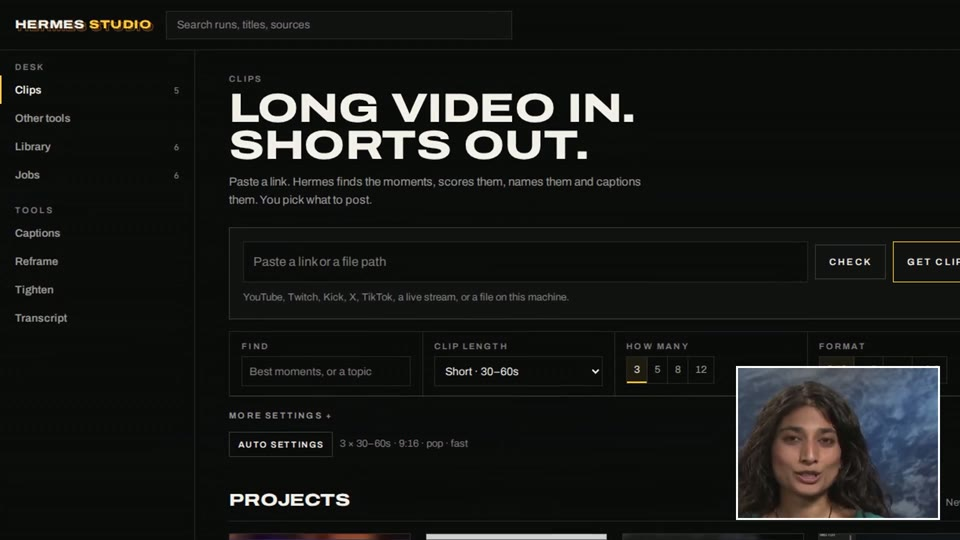
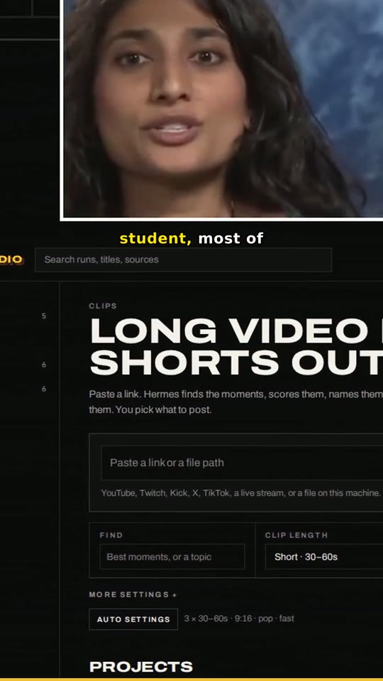
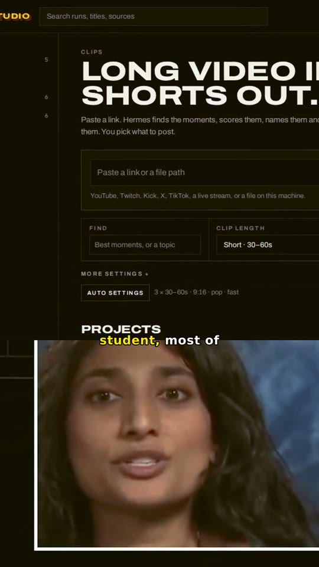

Video tools for Hermes Agent
Hermes Studio turns long video into shorts, captions, reframes and transcripts with local Whisper and FFmpeg. Your agent runs it. Your files stay home. Nothing posts until you do.
Pick one job, not a wall of settings. Each tool opens with the right defaults and only the options that matter for it.
Hermes looks at each clip before it cuts. A speaker gets cropped to the face. A stream with a facecam gets split, face on top or bottom, so nobody loses their head.

Source · 16:9
Auto → SpeakerFace found, crop locked on it for the whole clip. Word-by-word captions sit clear of the app buttons. Audio cleaned and levelled to -14 LUFS.

Source · facecam in corner
Split · face top
Face bottom · warmSmall face in a corner means a facecam. Studio stacks it over the game or screen, both locked, no drifting tracker. Flip it to the bottom or set the band size in one click.
Opus-style layouts. Face on top or bottom, band from 20 to 60%.
Punch, warm, cool, cinematic, vintage, black and white, bright.
Word-by-word highlight, your keywords in colour, fix any misheard word.
Move in and out, change the look, re-render. The old take waits in Dropped.
Example footage: “Mamta Patel Nagaraja”, NASA, public domain via Wikimedia Commons. The stream example lays that clip over a Hermes Studio screen recording.
Open the desk on localhost, or tell your agent. Same tools either way.
A file, YouTube, Twitch, Kick, X or a live stream. Studio checks it first.
Or let Hermes read the video and pick the tool, length and format for you.
Change the layout, filter or in and out of any clip and re-render. Social copy on request. You post.
What Hermes can do with a clip
What stays on your machine
Python 3.11+ and FFmpeg. Works as a Hermes Agent plugin, an MCP server or plain CLI.
Plugin for Hermes Agent
# clone and install git clone https://github.com/PabloTheThinker/hermes-studio cd hermes-studio && pip install -e . # open the desk hermesclip studio
Or straight from the CLI
# five tools, one flag
hermesclip run talk.mp4 --mode clip
hermesclip run talk.mp4 --mode tighten
hermesclip run talk.mp4 --mode transcript